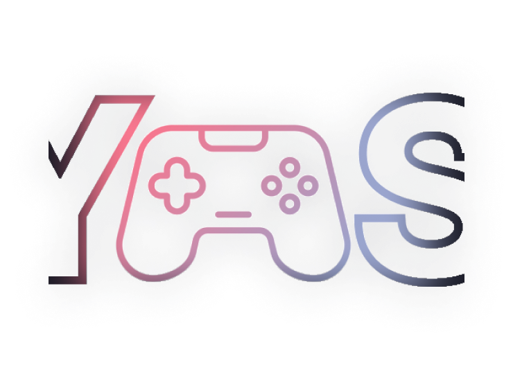
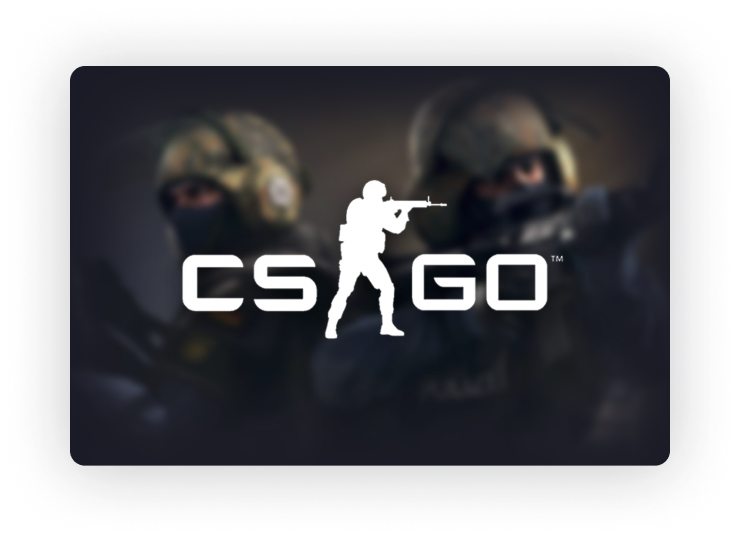
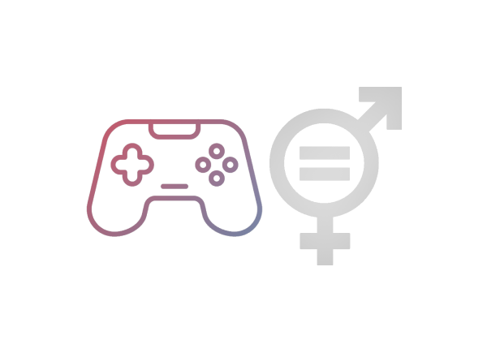

Aqui você conhecerá a história de alguns dos times mais relevantes no cenário inclusivo, que despertará seu interesse para assistir os campeonatos ou, quem sabe até, se inspirar e entrar para ser um(a) jogador(a).
O projeto é focado no cenário de CS:GO & CS2, mas pode ter certeza que os valores que nós queremos mostrar a você servirão em outros cenários inclusivos do mundo dos games também.


O Projeto YourGamerSide anda lado a lado com o Objetivo 5 da ONU tendo como o principal valor a igualdade de gênero.